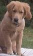

|  |
DejavúDejavú is our Golden Retriever. He was born on April 6, 2002. We called him Dejavú because we knew he was the one as soon as we saw him. Dejavú escaped from home running away from fireworks on early December 2003. Despite all our efforts, we couldn't find him and, although he carried his badge, he was never returned. We, his family, hope that whomever who has him treats him with as much love as he deserves. |
There are some pictures of Dejavú at his photos page.
On the books page you'll find a list of the books about dogs that I've read since we got Dejavú, more or less in the order I read them. I'll be writing comments about each book real soon now.
On the links page I've catalogued by topic the web pages about dogs I've found most relevant and interesting.